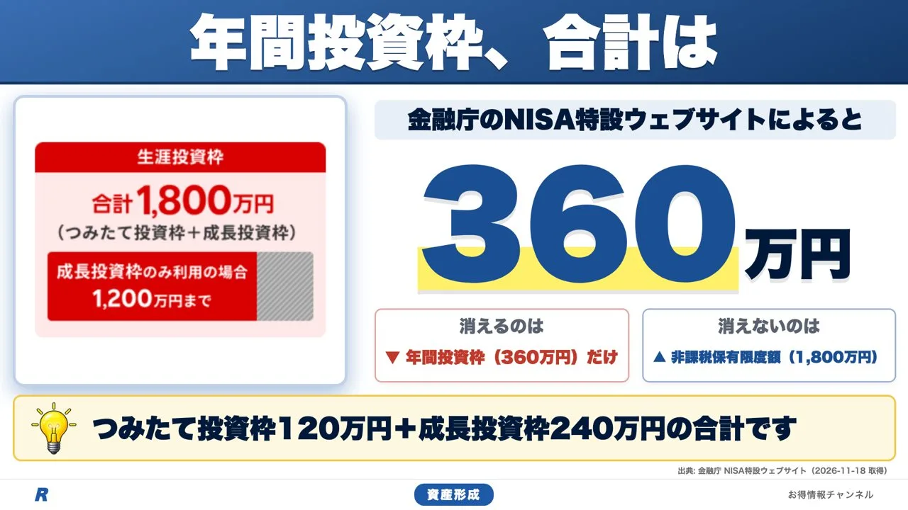
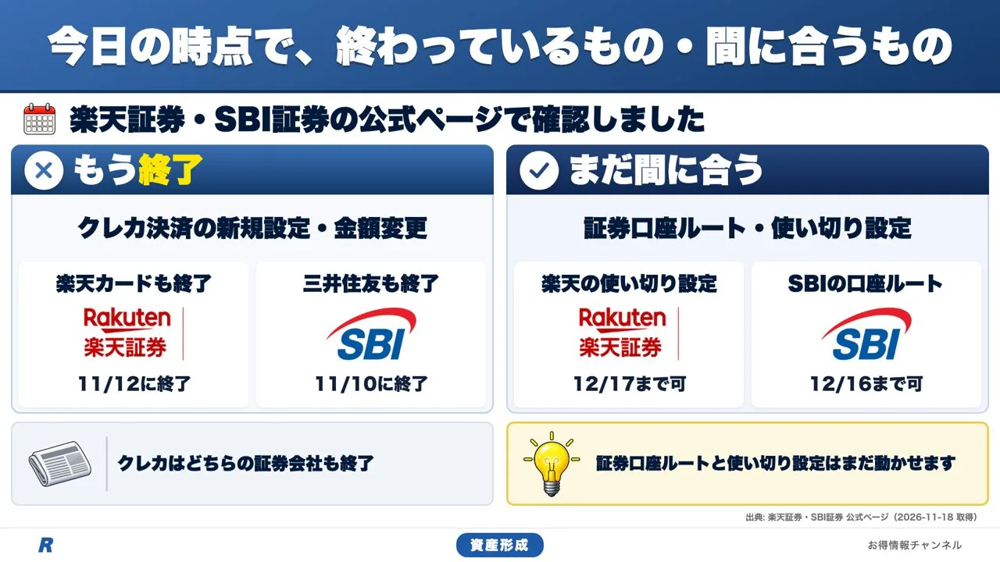
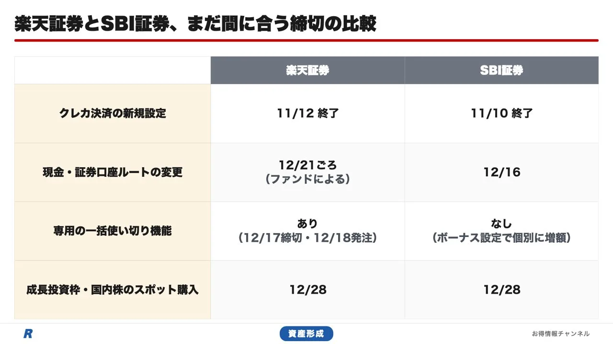
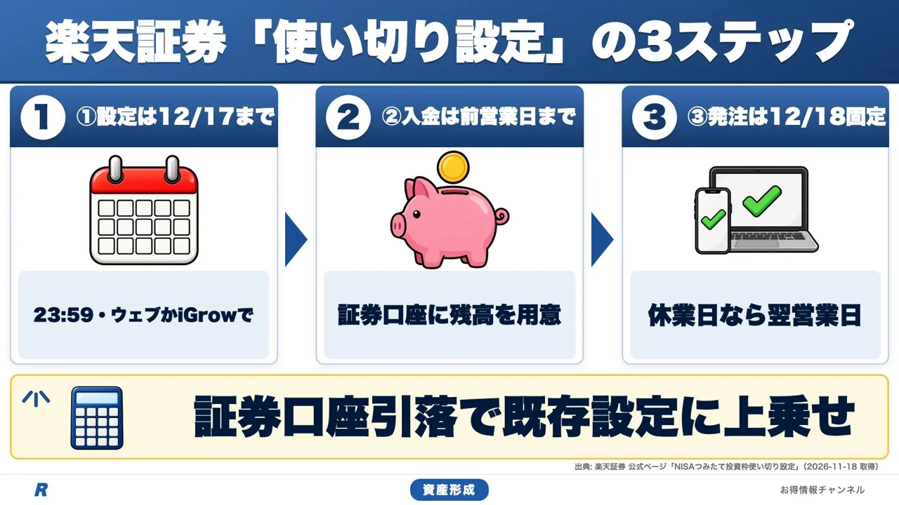
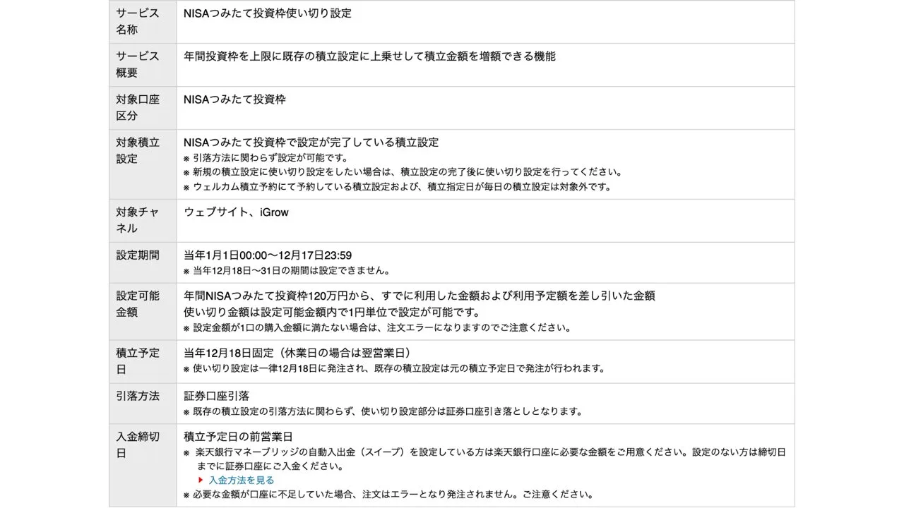
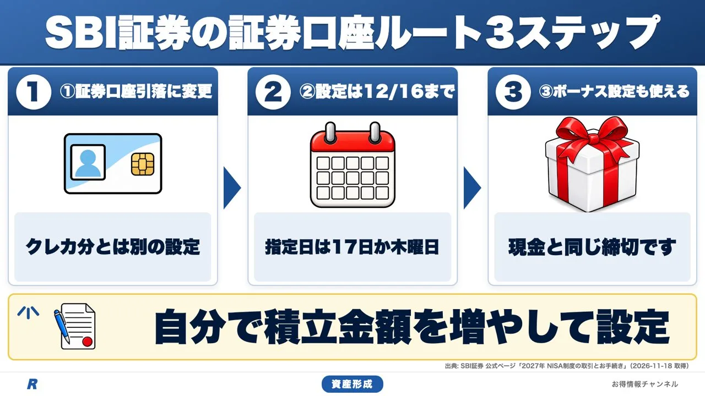
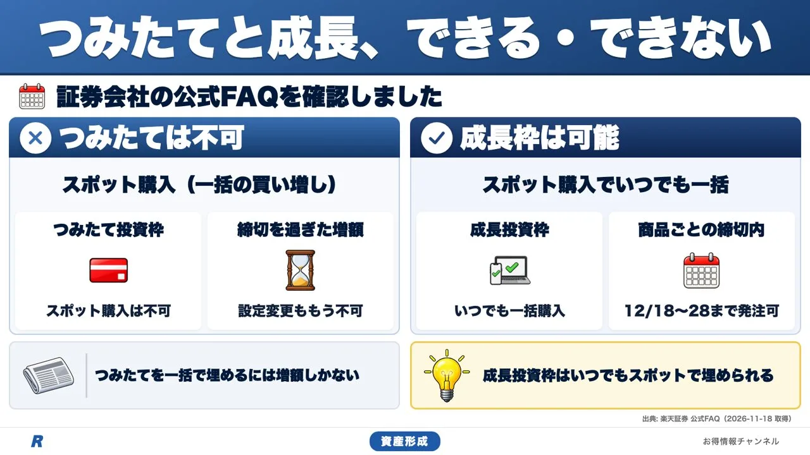
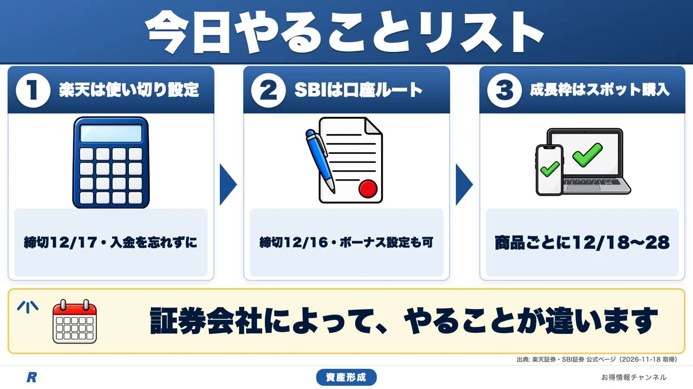

2026年のNISAの投資枠は、12月の締切を過ぎると使えなくなります。クレジットカードでの積立の締切はもう過ぎていますが、証券口座の現金を使う方法なら、楽天証券は12月17日、SBI証券は12月16日まで間に合います。この記事では、2026年11月18日に各社の公式ページで確かめた締切と、枠を埋める手順をまとめます。
 ▶ この記事の内容を動画で見る（お金の総合チャンネル）
▶ この記事の内容を動画で見る（お金の総合チャンネル）
01今年の枠は、今年のうちにしか使えない
NISAには1年ごとの投資枠があります。つみたて投資枠が120万円、成長投資枠が240万円で、合わせて360万円です。
この枠は毎年リセットされます。その年に使わなかった分を、翌年に繰り越すことはできません。たとえば今年つみたて投資枠を27万円しか使わなかった場合、残りの93万円分は年が変わると消えます。

一方で、生涯で使える上限（非課税保有限度額）は1,800万円で、うち成長投資枠は1,200万円までです。こちらは年をまたいでも残ります。今年の枠を使い切らなくても、生涯の上限が減るわけではありません。
02クレカ積立の締切は、もう過ぎている
12月の買付に間に合うクレジットカード積立の設定は、すでに締め切られています。

| 楽天証券 | SBI証券 | |
|---|---|---|
| クレカ積立の新規設定・金額変更 | 11月12日で終了 | 11月10日で終了 |
| 現金（証券口座）での積立の変更 | 12月下旬（ファンドによる） | 12月16日 |
| 一括で使い切る専用の機能 | あり（12月17日締切・12月18日発注） | なし（ボーナス月設定で個別に増額） |
| 成長投資枠・国内株のスポット購入 | 12月28日 | 12月28日 |
ここから先は、証券口座に入れた現金で買う方法だけが残っています。もうひとつ知っておきたいのは、つみたて投資枠は一括の買い増し（スポット購入）ができないことです。枠を埋めるには、積立の金額を増やす設定が必要です。

03楽天証券：「使い切り設定」で残りをまとめて上乗せする
楽天証券には「NISAつみたて投資枠使い切り設定」という専用の機能があります。年間120万円から、今年すでに使った金額と、これから自動で買われる予定の金額を差し引き、その残りを今の積立にまとめて上乗せしてくれます。


- 設定は12月17日の23時59分までに済ませます。12月18日から31日は設定できません。
- 発注日は12月18日に固定されています。
- 上乗せされる分は、今の積立がカード払いでも、必ず証券口座からの引き落としになります。
- そのため、12月18日の前の営業日までに、上乗せ分のお金を証券口座に入れておきます。
注意積立の指定日を「毎日」にしている場合、この機能は使えません。使いたいときは、先に毎月の積立に変えておく必要があります。
特定の月だけ金額を増やす「ボーナス設定」（年2回まで）もありますが、楽天カード決済と楽天ペイ残高決済の積立では使えません。カードで積み立てている人は、使い切り設定の方を選ぶことになります。
04SBI証券：ボーナス月設定で個別に増やす
SBI証券には、残りの枠を自動で計算してくれる専用の機能はありません。かわりに「ボーナス月設定」で、12月の買付金額を自分で増やします。

- 現金（証券口座）からの積立の設定期日は12月16日までです。
- ボーナス月設定は年2回までで、設定の期限は現金の積立と同じスケジュールです。
- ボーナス月設定は、クレカ積立には追加できません。現金での積立を別に作って増額します。
残りの枠がいくらかは、自分で計算します。月3万円を1月から9月まで積み立てていた場合を例にすると、使ったのは3万円×9か月で27万円、残りは120万円−27万円で93万円です。ここから10月以降に買われる分を引いた金額が、増額できる上限になります。
05成長投資枠は、スポット購入で12月下旬まで
成長投資枠は、積立でなくても、その場で買うスポット購入ができます。つみたて投資枠より締切が遅いのが特徴です。

- 国内株式は、楽天証券・SBI証券とも12月28日が年内の期日です。SBI証券では、12月29日以降の注文は受渡が2027年1月以降になり、翌年の枠が使われます。
- 投資信託は、申し込んでから受け渡しまでの営業日数（4〜9営業日）がファンドごとに違います。楽天証券では、年内の期日が12月18日から12月25日までの幅になります。
投資信託はファンドによって1週間ほど差が出るので、買いたいファンドの期日を先に確かめておくと安心です。
06口座をこれから作る人、ほかの証券会社の人
2026年分のNISA口座をこれから開く場合の受付期限も、12月の中旬です。
- 楽天証券12月中旬の予定です（郵送の場合は12月17日必着）。
- SBI証券総合口座と同時に開く場合はWEB申込が12月10日まで、口座をすでに持っている場合は12月11日までです。
2026年分の金融機関の変更は、すでに受付が終わっています。いまから変更できるのは2027年分です。
ここに出てこない証券会社でも、年末の取引スケジュールは各社の公式サイトで公表されています。締切の日付は会社ごとに違うので、自分が使っている会社の案内を確かめてください。

07まとめ：12月16日・17日が実質の締切
結論実質の締切は、SBI証券が12月16日、楽天証券が12月17日です。どちらも、締切の前に証券口座への入金が要ります。
- 今年の投資枠は、年をまたぐと繰り越せません。
- クレカ積立の締切は過ぎましたが、現金の積立なら楽天証券は12月17日（使い切り設定）、SBI証券は12月16日まで間に合います。
- 上乗せ分は証券口座からの引き落としになるので、締切の前に入金が必要です。
- 成長投資枠のスポット購入は、国内株なら12月28日までです。
この記事は、どの商品を買うかをすすめるものではありません。締切と手順は2026年11月18日時点の各社の案内によるものです。設定の前に、公式ページで最新の日付を確かめてください。